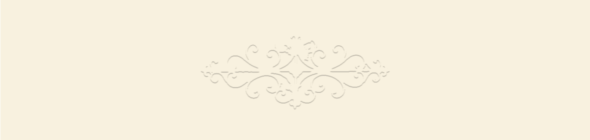

UX/UI DESIGN
- ✦ UX Research
- ✦ User Flows
- ✦ Wireframing
- ✦ UI Design
- ✦ Prototyping
- ✦ Accessibility
- ✦ Usability Testing

I'm a creative and curious person with a passion for design, visual communication and everything that connects creativity with technology.
My journey has taken me through different fields, from psychology and artistic studies to digital design and web development.
I'm currently specializing in UX/UI Design, while exploring graphic design and web development to create digital experiences that are both meaningful and visually engaging.
I believe that good design is about more than aesthetics: it's about understanding people, communicating ideas and finding the right balance between creativity and functionality.
Each experience has shaped the way I approach design, helping me combine empathy, visual thinking and a desire to keep learning.

VIEW MY CV